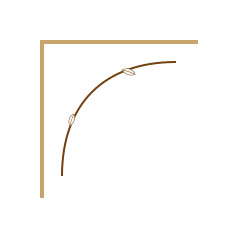

Advanced Aesthetic Biomedicine · Londrina, PR
Clarity, safety and skin quality
A distilled appointment suite that removes noise and keeps evaluation central.



Image-led care
Botanical clinical calm
A soft visual pause keeps the experience calm and easy to scan.

Care pathways
Sofiati Directory
The core pages organised for fast scanning on mobile and desktop.
Professional authority
CRBM 6277, clinical pathology background and laser specialism.
02Skin quality
Texture, clarity and sensitivity stay central to care.
03Contact routes
WhatsApp, email and Instagram stay clear and public.
04Laser decisions
Preparation, indication, comfort and aftercare guide the plan.
05Responsible results
Expectations stay realistic, private and individual.
06Start with evaluation
Clarify goals, timing and suitability before choosing a protocol.
Credentials
Biomedical foundation
CRBM 6277, clinical pathology background, aesthetics, cosmetology and laser specialism guide the care path.
AboutResponsible results
Results with responsibility
No invented outcomes. Expectations stay linked to protocol, sessions, characteristics and aftercare.
Results
Journal
Short education notes
Laser, skin and aftercare topics help visitors arrive with better consultation questions.
Journal
Laser care
Laser guided by evaluation
Laser hair removal and rejuvenation topics are framed through preparation, indication and aftercare.
View laser
Skin care
Skin quality first
Skin cleansing, sensitivity, spots, melasma and texture education stay clear and careful.
View skin
Care philosophy
Precision with warmth
Treatment decisions begin with listening, suitability and natural-looking expectations.
Explore care
Client experience
Approval-first stories
Testimonials and patient media are only used when reviewed and approved.
Testimonials
FAQ
Questions before protocols
Brief answers support clarity while returning treatment decisions to individual evaluation.
FAQConsultation
Begin with evaluation
A short consultation route keeps decisions calm, private and evaluation-led.
CRBM 6277 · Londrina, PR